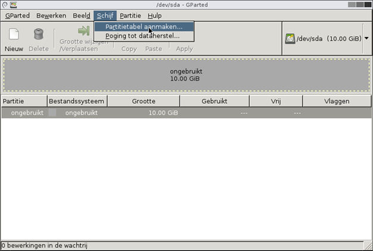
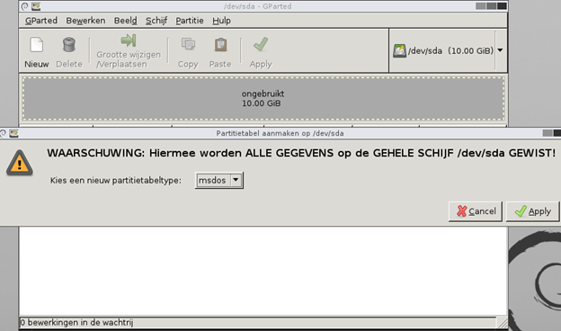
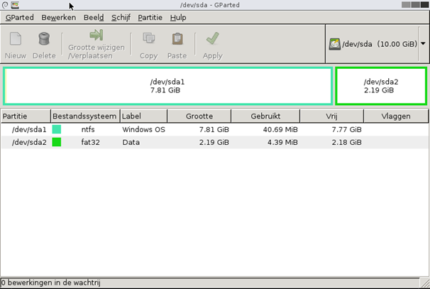
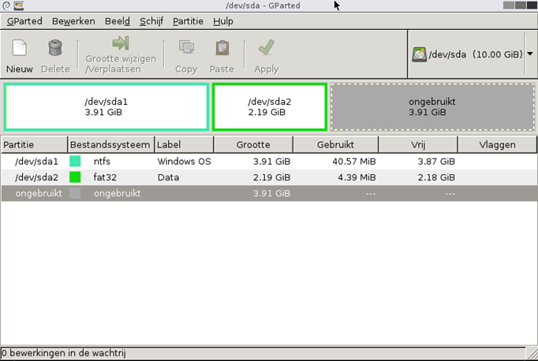
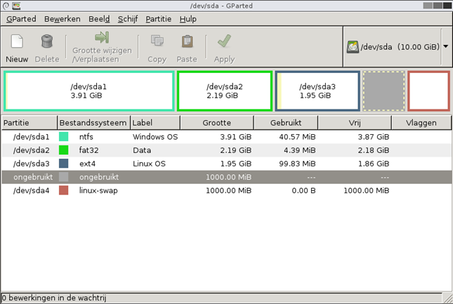

Op /dev/sda maak je een MBR-partitietabel en vult die met vier primaire partities: twee voor
Windows en twee voor Linux. Onderweg wijzig je de groottes, want de plaats die je in het begin verdeelt
blijkt verderop niet te volstaan.
Controleer dat /dev/sda geselecteerd is en kies in het menu Schijf
voor Partitietabel aanmaken.

Kies als partitietabeltype msdos en klik op Apply.

De schijf draagt nu een MBR-partitietabel, met vier tabelplaatsen. Wat je daar precies mee kan, staat op Partitietabellen.
Maak twee primaire partities na met dezelfde volgorde en dezelfde bestandssystemen als hieronder: een van ongeveer 8 GB in ntfs voor het besturingssysteem, en een van ongeveer 2 GB in fat32 voor de data. Het label mag je zelf kiezen.

Zolang je wijzigingen in de wachtrij staan, is de kolom met /dev/sda1 en
/dev/sda2 nog leeg. GParted vult ze in zodra het de bewerkingen uitgevoerd heeft.
Er moet nog een besturingssysteem bij, en de acht gigabyte van de eerste partitie laten daar te weinig ruimte voor over. Bestaande partities verklein je met Grootte wijzigen / Verplaatsen.

In de vrijgekomen ruimte komen de twee partities die een Linux-installatie nodig heeft: één voor het besturingssysteem zelf in ext4, en één voor de wisselruimte in linux-swap.

Het is de schijfruimte waar Linux gegevens neerzet waar op dat moment geen plaats meer voor is in het
werkgeheugen. Windows doet hetzelfde in een bestand, pagefile.sys. De uitleg staat op
Bestandssystemen.
De vier tabelplaatsen zijn nu bezet, en de ruimte die je tussen de laatste twee partities vrijgelaten hebt blijft ongebruikt. Op de volgende pagina zie je waarom, en wat je eraan doet.